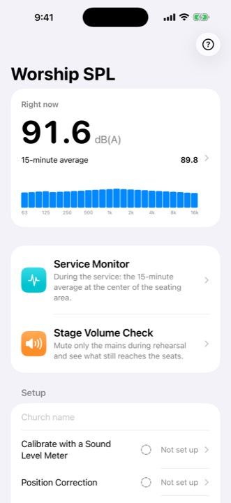
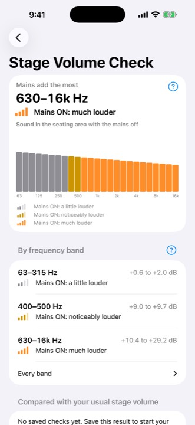
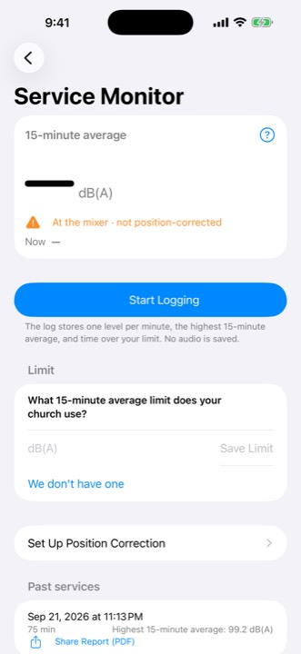
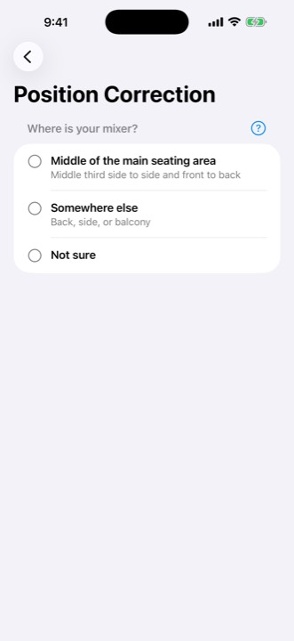

Calibrate once. Log every service.
Worship SPL keeps a weekly record of how loud your services are, measured the same way each time, and shares it with your church's sound team.
Free to download for iPhone (iOS 17 or later). Logging, reports, team sharing, Stage Volume Check and Position Correction need a subscription: $4.99 per month or $39.99 per year, with a 14-day free trial for new subscribers.
No audio is recorded. Sound is analyzed on your iPhone and is not saved or sent anywhere.




Screens show sample data.
Why a weekly record helps
When someone says the service was too loud, a team usually has a feeling and nothing written down. Worship SPL measures the same way from the same iPhone every week, so the conversation can start from what was measured.
A phone is not a measurement microphone. That is why Worship SPL asks you to calibrate it once against a real sound level meter. After that, the iPhone at the mixer gives you a consistent weekly log.
What you need
- An iPhone with iOS 17 or later.
- A sound level meter, once, to calibrate. Without calibration, levels are relative and are not compared with your limit.
- For Position Correction: a second device to play pink noise through the mains.
- For Stage Volume Check: a tripod for the iPhone at the center of the seating area, and the band playing the same part for about three minutes.
Service Monitor
- Keep the iPhone at the mixer during the service.
- After a one-time Position Correction (or if your mixer is near the middle of the room), it estimates the 15-minute average at the center of the seating area.
- Once calibrated, it compares that average with the limit your church chooses.
- It logs each service: one level per minute, the highest 15-minute average and the time over your limit, and shares a one-page PDF report.
Share it with your sound team
Invite your team through iCloud. Everyone sees the same limit, position correction, checks and service logs. Invited members join at no charge with their own Apple Account.
Stage Volume Check
During rehearsal, mute only the mains at the times the app shows. The iPhone at the center of the seating area compares mains off and on in 1/3-octave bands from 63 Hz to 16 kHz, three times. You see where the mains add a lot, and where they add little because the stage is already loud. After three saved checks on the same iPhone, bands that differ from your usual are marked.
Position Correction
If your mixer isn't in the middle of the room, measure a correction once with pink noise, one step per screen. After that, the iPhone at the mixer estimates the level at the center of the seating area.
Price
Free: live levels and the 15-minute average.
Subscription: service logs and reports, inviting your team, Stage Volume Check and Position Correction. $4.99 per month, or $39.99 per year (about a third less than paying monthly). New subscribers get a 14-day free trial. Cancel any time in Settings > Apple Account > Subscriptions.
Questions
Why a 15-minute average?
A set is judged by how loud it stays, not by a single loud hit. Life.Church, for example, describes its target as an average over 18 minutes of worship. See how loud church worship should be for the numbers other teams publish.
Does it record the service?
No. Audio is analyzed on your iPhone as it comes in. It is not recorded, saved or sent anywhere.
Where are the records kept?
On your iPhone. If you invite your team, they are stored in your iCloud account and shared with the people you invite. We cannot see them.